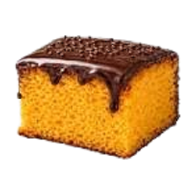

Ingredientes
Ingredientes
Massa
3 cenouras médias
3 ovos
2 xícaras de açúcar
1 xícara de óleo de canola
2 xícaras de farinha de trigo
1 pitada de sal
1 colher de sopa de fermento em pó
Ingredientes
Cobertura
5 colheres de sopa de açúcar
3 colheres de sopa de chocolate em pó
2 colheres de sopa de manteiga
2 colheres de sopa de leite
Modo de preparo
1. Preaqueça o forno a 180°C.
2. Bata as cenouras com os ovos e o açúcar.
3. Adicione o óleo e bata bem.
4. Peneire a farinha e o fermento e junte à mistura.
5. Despeje a massa em um refratário untado e enfarinhado.
6. Asse por cerca de 40 minutos ou até que um palito inserido no centro saia limpo.
7. Prepare a cobertura misturando todos os ingredientes.
8. Espalhe a cobertura sobre o bolo morno.